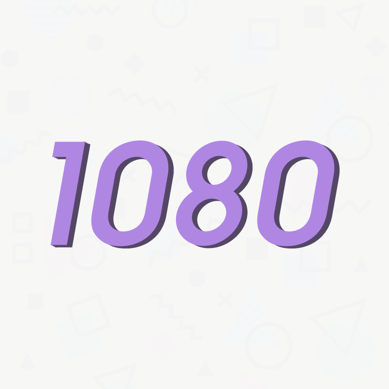

About Me
I'm a fourteen year old graphic and web designer who focuses on intuitive and beautiful designs. I moved from Boulder, Colorado to Santa Fe, New Mexico two years ago. After the move I became interested in graphic design and started uploading speed art videos to my YouTube channel. I began by creating social media banners and avatars and eventually started making them for people who would watch my videos. Simultaneous to my interest in design was my interest in computer hardware, my channel shifted from design to hardware benchmarks which I still make now. I now focus eqaully on web design and my YouTube channel.